Paint correction is a controlled polishing process used to improve the appearance of automotive paint by reducing suitable defects such as swirl marks, light scratches, oxidation, haze and dullness.
At TRIEYE Detailing Studio in Villivakkam, Chennai, the paint condition is assessed before polishing so the correction approach can be matched to the vehicle rather than treating every paint surface the same way.
Transparent Detailer Note: Paint correction can reduce or remove suitable surface defects depending on clear-coat thickness and defect depth. Deep scratches penetrating past clear-coat layers require specialized repair.
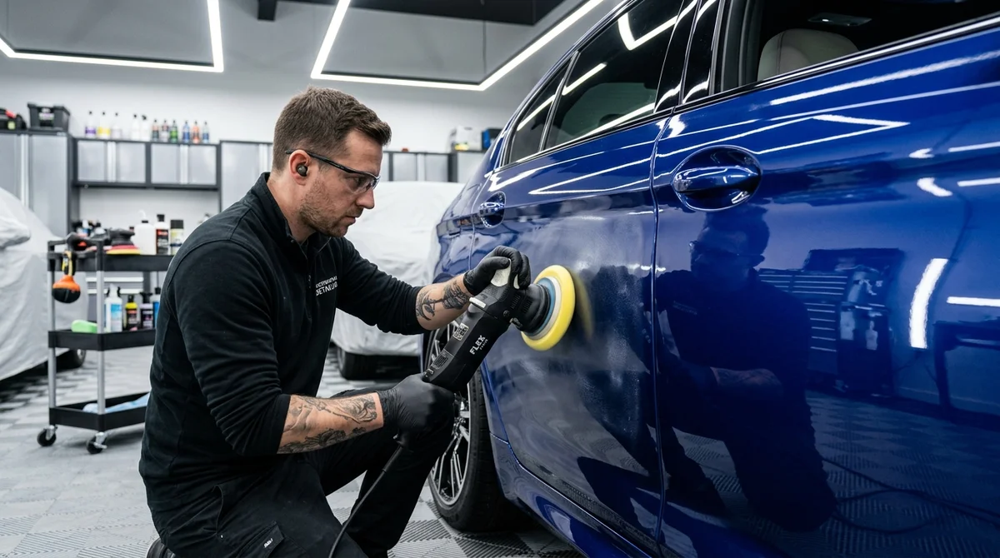
Targeted clear-coat correction tailored to defect severity and paint safety.
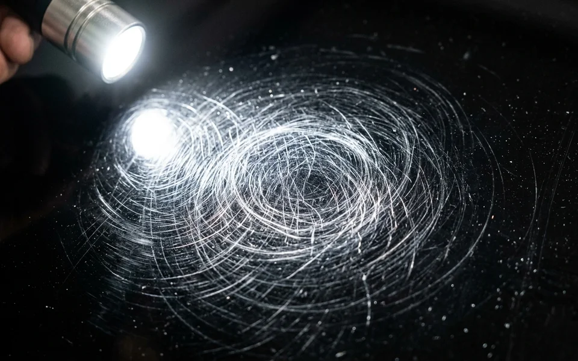
Fine circular marks commonly visible under direct sunlight or detailing lights.
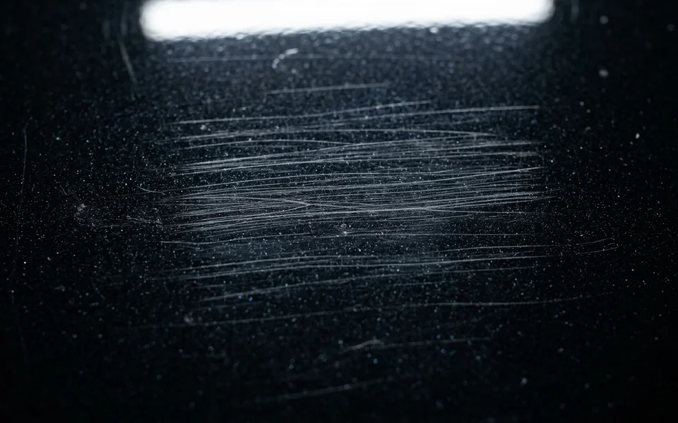
Suitable shallow defects within correctable clear-coat paint layers.
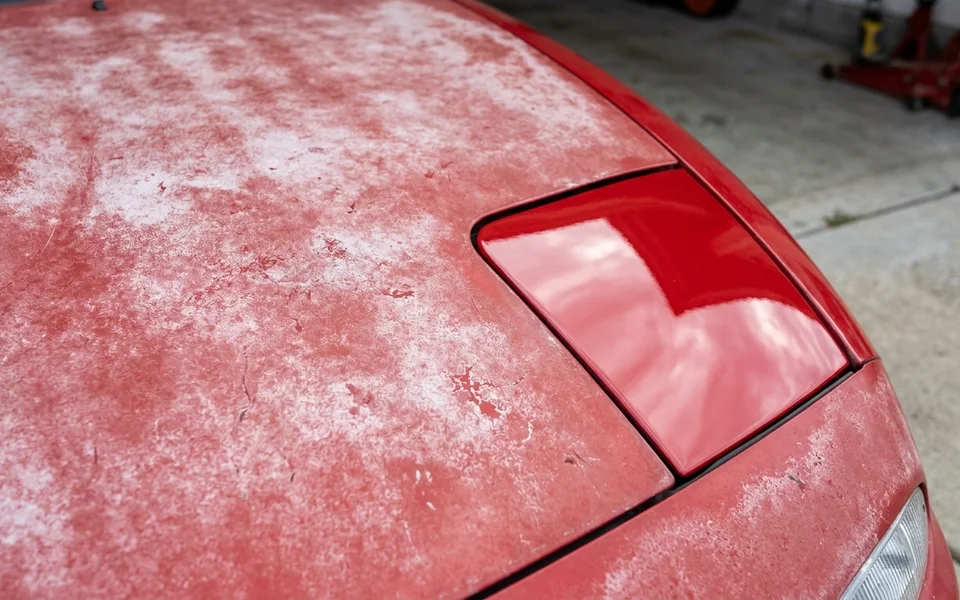
Dull or faded appearance caused by UV rays and environmental paint deterioration.
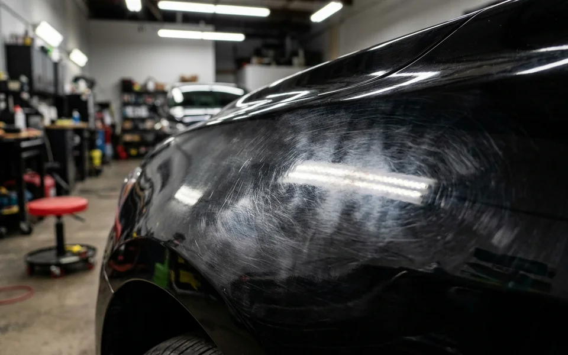
Cloudy or low-clarity finish and buffer trails that reduce sharp reflection.
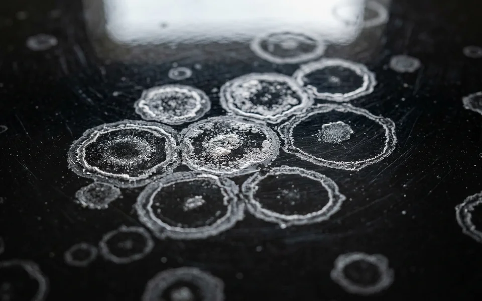
Suitable mineral spotting and surface staining where clear-coat correction is appropriate.
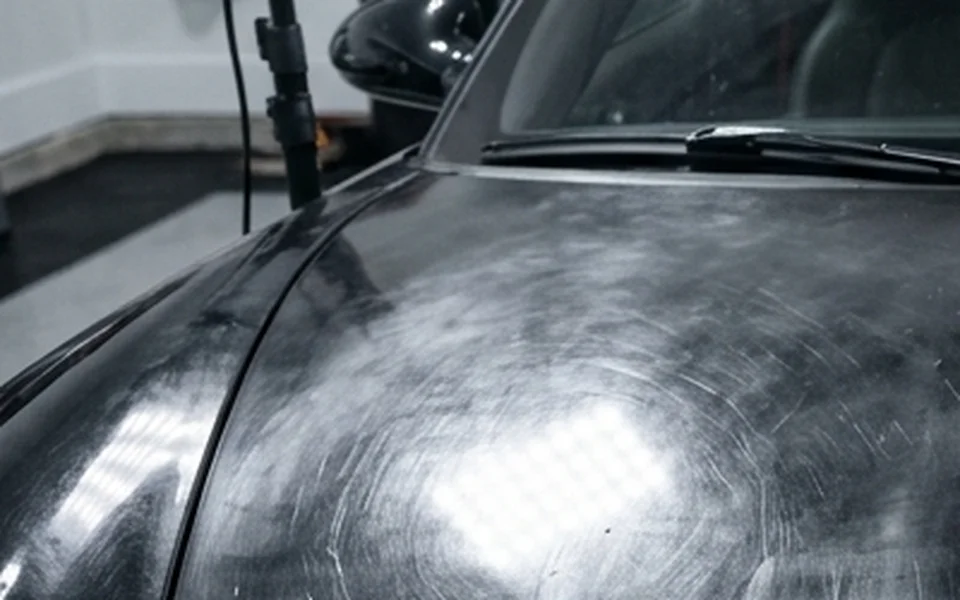
Dull paint that lacks optical depth, color richness and reflective clarity.
Systematic evaluation and methodical machine polishing for safe, consistent clarity.
Assess paint condition, visible defects and areas requiring dedicated attention.
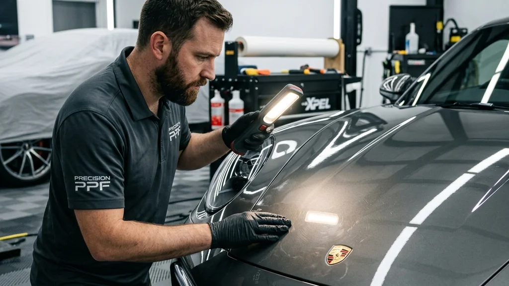
Thorough cleaning and surface decontamination before machine correction begins.
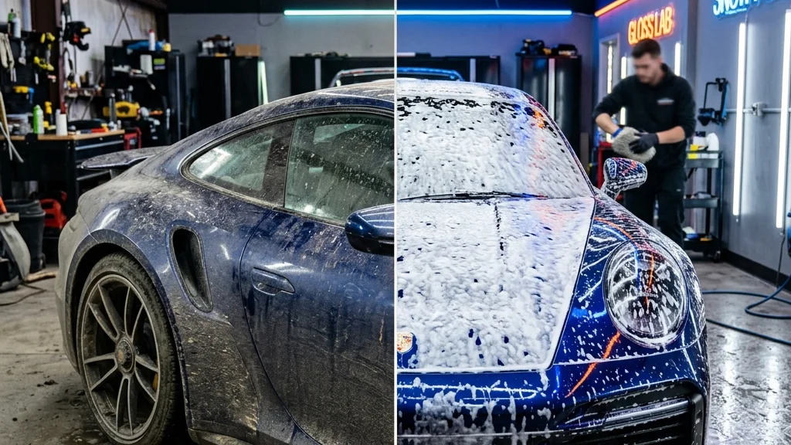
Evaluate pad & compound combination and mask sensitive rubber and plastic trims.
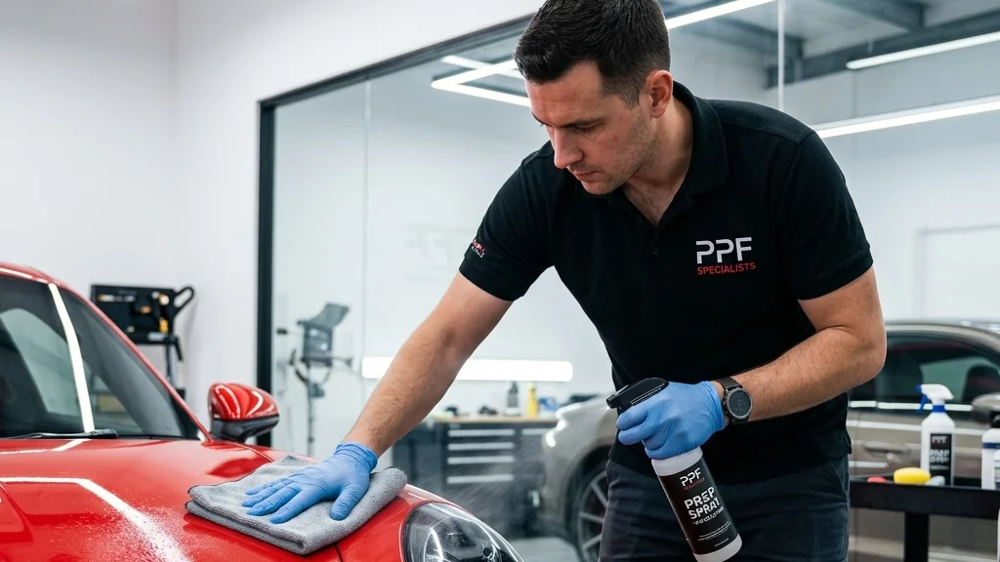
Controlled machine polishing to improve clarity and reduce suitable surface defects.
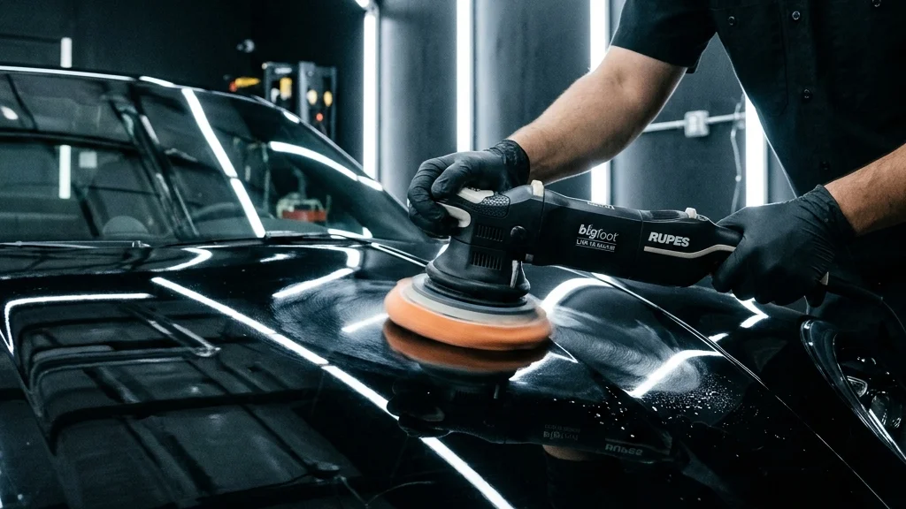
Inspect finish under proper inspection lights and review gloss, clarity and consistency.
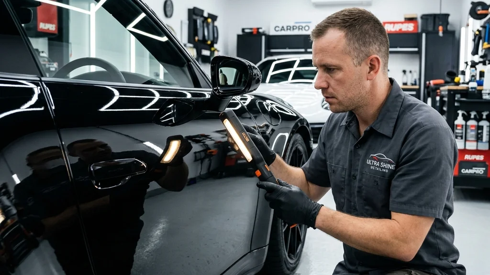
Visual examples of paint-correction results
At TRIEYE Detailing Studio in Villivakkam, Chennai, we view paint correction as an art of precision and care. Rather than aggressive cut polishing that unnecessarily strips clear coat, our process focuses on controlled refinement.
Correction approach matched specifically to paint condition, softness and thickness.
Careful machine polishing with suitable dual-action polishers, fine pads and compounds.
Meticulous attention to reflective clarity, deep gloss and uniform paint presentation.
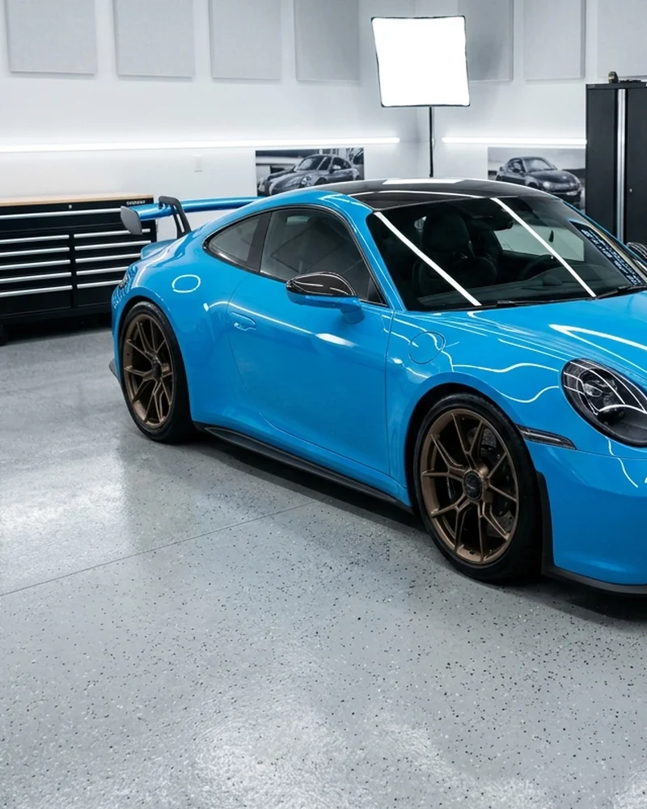
After paint correction, customers may choose an appropriate protection option such as ceramic coating, graphene coating or PPF depending on their vehicle goals and driving conditions.
Hardened hydrophobic barrier that seals the newly polished paint, shielding against UV rays, water spots and light contamination with exceptional slickness.
Explore Ceramic Coating →Ultra-durable, self-healing polyurethane film providing the ultimate physical defense against road gravel, stone chips and physical scratches.
Explore PPF Protection →Advanced thermal resistance and water-beading performance to lock in depth and preserve corrected paint between periodic maintenance washes.
View Detailing Packages →TRIEYE Detailing Studio is a professional automotive detailing studio in Villivakkam, Chennai, offering rubbing polish, machine paint correction, ceramic coatings, PPF and precision vehicle care.
Clear answers on paint correction, swirl removal and paint safety.
Paint correction is a machine-polishing process used to improve defects such as swirl marks, light scratches, oxidation and dullness in automotive paint.
Not every scratch can be safely removed. The achievable correction depends on the depth of the defect and the available clear coat. Deep scratches may require a different repair method.
Basic polishing mainly improves gloss, while paint correction involves a more controlled process focused on reducing visible paint defects and improving surface clarity.
When paint defects are present, correction before coating can improve the surface finish so the protective coating is applied over cleaner and more refined paint.
The time required depends on the vehicle size, paint condition and level of correction required. A detailed inspection is needed for an accurate estimate.